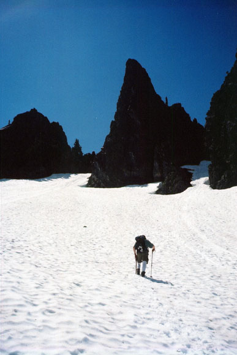
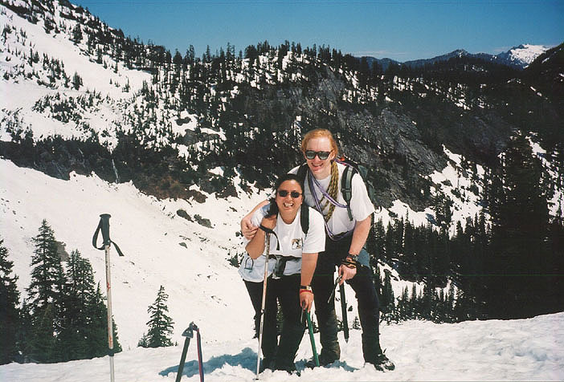
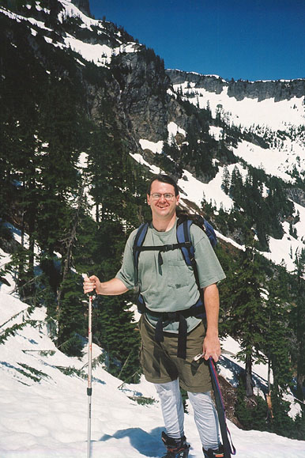
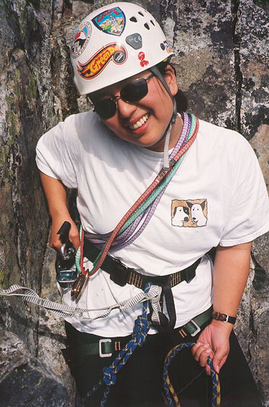
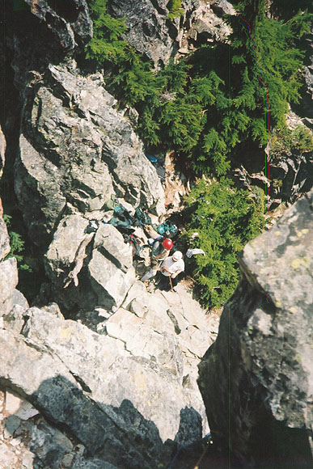
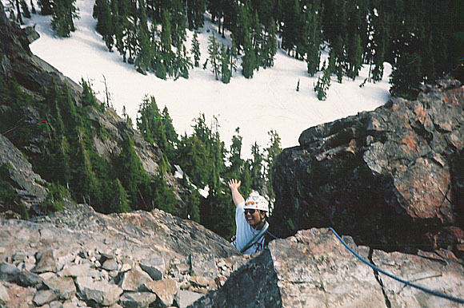
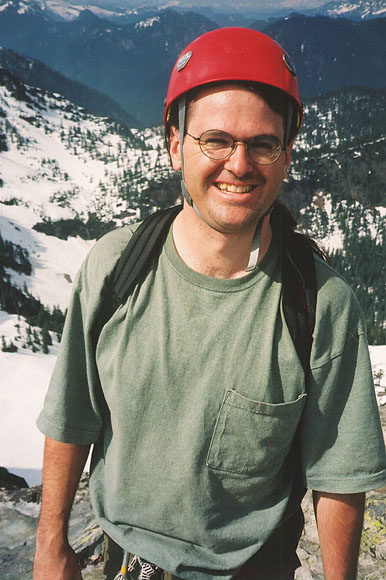
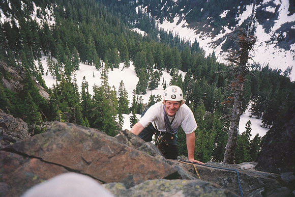
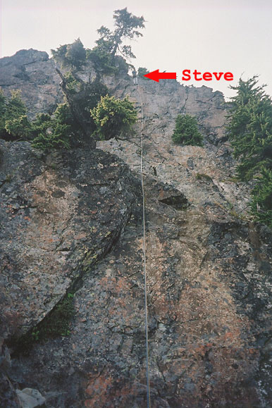

The Tooth
- with Kris and Steve Allain
- June, 2002
Our good friend Steve was visiting from St. Louis. A staunch hiker and lover of mountains, he had been sorely deprived in the Missouri territories. He had a few days off from Aikido studies in the city, so Kris and I decided to take him climbing. At first we thought of something like an old favorite at Leavenworth, but due to a really fun experience on the Tooth earlier in the month, I was excited to take Kris and Steve there. The Tooth provides a mix of snow and rock climbing, in the heart of excellent alpine scenery. Less driving too!
We were hiking by 8:30, and were able to park at the upper lot and walk on snow right away. Steve had rented plastic boots, Kris and I had light hiking boots. The weather was perfect, and the rustling stream was a merry companion as we trudged up the valley. Kris had to get used to walking on snow, something she neither likes nor…likes! But she came along like a solid trooper. Steve became our step-kicker as the terrain steepened.









We missed a turn in the trail, and ended up climbing steeply on a long traverse towards the upper basin (Great Scott Bowl). Kris wasn’t feeling very well, so several times we stopped and debated returning. But she just needed some food, and a Powerbar did the trick. Meanwhile, the views became more expansive, and after another half-hour we were out of the trees and in the bowl. Rocky buttresses rise on either side, and a few boulders in the basin peek from the heavy mantle of winter snow. It was very quiet, and we saw little specks moving up the slope above Source Lake. The sun was out, slowing us down a bit. Kris wasn’t used to the deceiving appearance of distant objects in snowy regions. The objective looks very close, but with each step, it seems to recede! We talked to relieve the boredom caused by this effect. Suddenly, I heard the strains of “Pinball Wizard” and a golden-haired rock star boot skied down the gully. “Michael?”
And so the second chance meeting of Daniel Smith at the Tooth had occurred! The four of us chatted for a while in the sun, and went our own ways. Dan down to some afternoon errand, and Kris, Steve and I up the slope to the ridge crest. I noticed the slope below Pineapple Pass had melted out quite a bit, remembering a few weeks ago when our merry party had mistakenly climbed it to the top. Kris found the slope angle a bit intimidating, so I short-roped her to the ridge top, where we met Steve. He was a little awestruck by the surroundings and steepness of the final climb. He still couldn’t believe we were going to climb the highest rocky spire we had walked under!
Planning to rest at the base of the climb, we carefully traversed around a tower and along a snowbank. I belayed Kris and Steve up to the start of the climb at Pineapple Pass. We drank some water and changed into rock climbing shoes. About 15 climbers must have been on the rock above us - it was hard to find a place to stow our gear. Boots, packs and axes lay everywhere. Kris was especially happy to have reached the rock - she was in her element now! Steve, on the other hand, who had done so well on the snow, was still here only because he didn’t know how to untie the knot we’d attached to him!
Kris belayed me on the short first pitch. With our double ropes, I was then able to belay Steve, with Kris climbing about 15 feet behind. This proved to be a good system. Since it was Steve’s first rock climb, Kris could offer advice at key points and help quite a bit.
It was great fun introducing Steve to this kind of climbing! He would say the funniest things like “okay, I peed my pants twice on that pitch!” or “You people are crazy! Am I crazy?” or “Oh god, I can’t feel my legs!” Although he was probably truly frightened at first, he learned quickly, and came up with a smile every time. I enjoyed sensing that feeling he must have had of absolute amazement at being in such a forbidding, magical place. We were breaking some fundamental rule of physics: colors seemed richer, the air pulsed.
Steve’s Aikido training came in handy as we climbed. He was too tense, and got a leg cramp. But by remembering to relax and breathe, it went away, allowing him to begin having fun with the climbing. He told me at the end of the third pitch about seeking out a harder variation to some mundane climbing. How quickly the mind adapts, then grows restless again! But the final pitch provided enough adventure as is. We followed “the catwalk” for 10 feet to the left. Here, Steve learned about “exposure,” because he had to look down at his feet as he inched along the wall. There are no handholds As you move left, the abyss beneath grows deeper, revealing tiny trees far below. Then, we climbed up and back right, following an excellent crack in the rock that provided me with a chance to place some protection against a fall. The trickiest moves of the day were here - now you have great handholds but no footholds! As I belayed, I felt slack on Kris’s line, but Steve had stopped moving. Kris climbed up closer and helped him make the final moves with a few suggestions. Steve’s head appeared over the cliff edge, and he made the final bouldery move to join me just below the summit. “I pissed my pants twice, and defecated at least once on that pitch,” confessed Steve, equal parts mischief and relief!
Cheerfully, Kris popped up and our happy trio scrambled the final feet to the summit. We had made good time on the rock climbing, and deserved to linger for a while, looking at Rainier to the south. A cloud spilled onto the Emmons Glacier from the summit, and a bank of gray clouds was coming towards us from the ocean. But all the peaks were still in the sun. I pointed out Mt. Stuart, Mt. Thompson and many others. Steve carefully probed the edges of the summit block. We had the place to ourselves. It was really fun.
Finally, I went to prepare the rappel. I didn’t have a rappel device, so I used a Muenter hitch. This kinked the rope horribly. Really, I’ve never seen anything like it, though I’ve rappelled on a Muenter hitch many times. Time was short, and I begrudged the half-hour spent fixing the ropes. Steve came down on his first rappel. Unfortunately, he had to deal with additional tangling. Kris arrived, then the rope got stuck after the free end went behind a rock. I freed that, then got a belayed downclimb of the first two pitches (no more Muenter hitch rappelling for me!). This rappel was steeper, and Steve found it pretty difficult due to all the air beneath his feet! Again the rope got stuck. A very late party was climbing up, and freed the rope for us - thanks folks!
We decided to rappel down the steeper Pineapple Pass route. I downclimbed on belay, then Steve and Kris followed. This time, the ropes pulled cleanly, but I stupidly forgot to untie the knot, so I had to climb 20 feet back up the gully. It was growing pretty late. We hadn’t expected to be out so long, so we had no headlamps. Oops…
Steve glissaded down the steep snow to the basin floor, and I gave Kris a belay for her glissade. She tried to hike down the snow unassisted, as I kept encouraging (she’d say needling), but many times it was just too difficult. She felt completely insecure on the snow. Meanwhile, I was getting nervous about the time, and begrudged every necessity to get out the rope and belay. I hurt her feelings by insisting that she could just “do it.” Boy was I stupid. Finally, I learned that we could move a lot faster if she did have her belay, and mostly she’d have a belayed sitting glissade.
Steve was an excellent companion during this phase of the descent (which was the hardest part of the day). He would walk beside Kris as she glissaded, and wait with her at a secure place for me to come down and belay again. Once we got this system going, it took little more time than walking would, because I could send Kris down 200 feet at a time, then come bounding down myself in a matter of seconds. We worked together on routefinding. We had earlier thought to follow the Snow Lake Trail back, since the approach we took had been harder than expected due to traversing. But as we reached the Source Lake basin, it seemed easier to follow the creek back, hopefully keeping on a trail to avoid steep traverses, and getting caught down by the creek, as can happen there. We found a trail, and pretty quickly reached the point we had lost it on the way in. As it grew darker, we spread out. Steve in front, keeping the tracks, me in the middle, keeping him in sight, and Kris, just in sight behind. Finally, it grew dark enough that we had to keep right together, and in this way we happily came to the parking lot. Steve was so exhausted he practically leaned on the car to take a leak. That cracked Kris up!
There was much rejoicing, and we felt really happy to have done this climb together. In several ways, it was a foolhardy operation, but because of the great effort and challenge, the memory of this great June day will linger. As we drove away, eager for Cokes, the clouds rolled into the Mountains, encasing the Tooth in a dark gray shroud.
My thanks to Steve, who was valiant, courageous, and kept us laughing! My thanks to Kris, who patiently endured much husbandly error, but showed her bravery at every step on the intimidating snows. I believe she kept on for her friend Steve, who needed her help on the rock climbing. You couldn’t ask for a better friend than her.